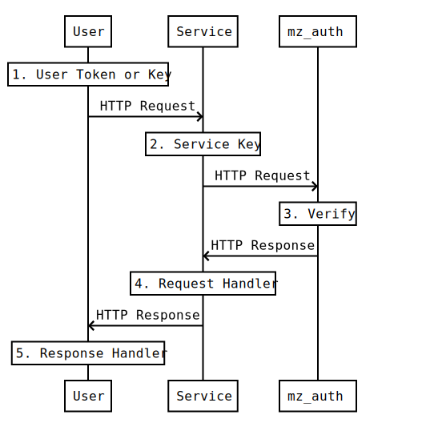

Introduction
Warning: The author of this application is not a security expert. The code has not undergone any kind of review. Use it at your own risk!
sso-grpc is a gRPC authentication server, with an OpenAPI version 2 proxy server sso-openapi. It is designed for use as a backend for other applications which must authenticate users and their requests, such as API servers.
The following diagram is an overview of the authentication system.

- sso-grpc authentication server.
- Providers are registered as a Service with sso-grpc, for example API servers.
- A Service Key is used to authenticate requests from the service to sso-grpc.
- Consumers are registered as a User with sso-grpc.
- A User Key is used to authenticate a user, and authenticate requests from the user to the service.
In the diagram above, Service A can authenticate requests from User 1 and User 2. Service B can authenticate requests from User 2 and User 3.
The following diagram shows how services and sso-grpc integrate to authenticate user requests.

- User with token or key acquired by authentication method sends HTTP request to service.
- Service sends HTTP request to sso with its own service key, and the users token or key.
- sso authenticates service using the service key, and verifies user token or key.
- If authenticated/verified, service handles request and sends HTTP response to user.
- User handles HTTP response.
Features
User Authentication
User authentication methods are organised into Provider groups. Services are registered with callback URLs for each supported provider.
Local Provider
User authentication using unique email address and password.
- User login returns access and refresh tokens.
- User registration with email confirmation.
- User password reset via email.
- User password update required.
- User email address and password updates require current password.
- Outgoing emails contain revokation links to disable user access in case of compromised access.
- Password stored as argon2 hash using libreauth.
- Password strength checked by zxcvbn.
- Password leaks checked by Pwned Passwords.
- Password not set disables password login.
- User key for service of
Tokentype is required.
GitHub Provider
User authentication using GitHub OAuth2.
- User login returns access and refresh tokens.
- User key for service of
Tokentype is required.
Microsoft Provider
User authentication using Microsoft OAuth2.
- User login returns access and refresh tokens.
- User key for service of
Tokentype is required.
Request Authentication
Request authentication methods. Services use these endpoints to determine whether a user request is permitted.
Key
Request authentication using an API key distributed by the service.
- User authenticates requests to a service using a unique, random key.
- User key can be revoked, but is not time-limited.
- User key for service of
Keytype is required.
Token
Request authentication using access token returned by user authentication provider.
- User authenticates requests to a service using a JWT access token.
- User generates new access and refresh tokens using a JWT refresh token.
- User token is time-limited.
- User key can be revoked, which also revokes all tokens the key produced.
- User key for service of
Tokentype is required.
TOTP
Request authentication using TOTP code generated from a key distributed by the service.
- User key for service of
Totptype is required.
CSRF Tokens
Services can use sso-grpc to create and verify single-use CSRF tokens
- If service uses cookies for authentication, these tokens are used in form templates to prevent CSRF attacks.
Audit Logging
All sso-grpc endpoint failures after input validation are audited. POST, PATCH, DELETE endpoint successes are also audited.
- Services are able to read, create and update their own audit logs.
- Audit logs are append only, logs can be created when requests are received and response data can be added when request handled.
- Audit logs have retention time (default 3 months).